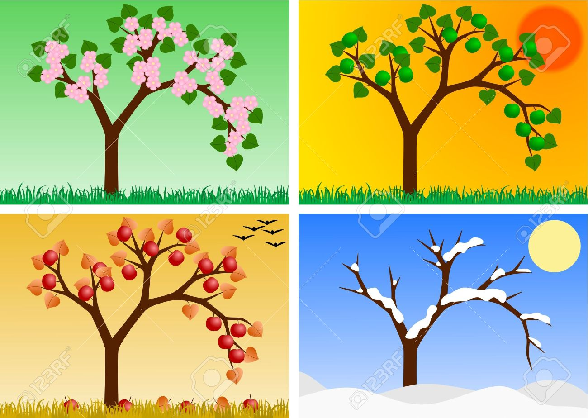

Trees--especially hardwoods--undergo many changes over the course of the year. These changes are adaptations to meet the tree's needs and in response to the harshness of the climate. During the winter, the temperature drops and the sun rides low on the horizon. Both the ground and water lie frozen. The broadleaf trees stand bare. The trees don't grow or reproduce. They are dormant. In the spring, the temperature increases, melting off the snow. There's plenty of water in the ground and the sun shines brightly. It's a time of bounty that trees put to good use to develop, grow, and produce flowers and leaves. Summer brings hot, sunny weather, but it's often a time of drought. Trees take this time to store reserves using photosynthesis to stabilize the new tissue that has developed. When fall comes around, fruit ripens and trees start preparing for the arrival of winter. Days grow shorter and the sun loses some of its strength. Leaves can no longer carry out photosynthesis and start to display their festive fall colors. When winter arrives, trees become dormant and the cycle begins again. Life can be pretty tough on a tree! A tree's annual rings reveal the events that have occurred in our environment.
